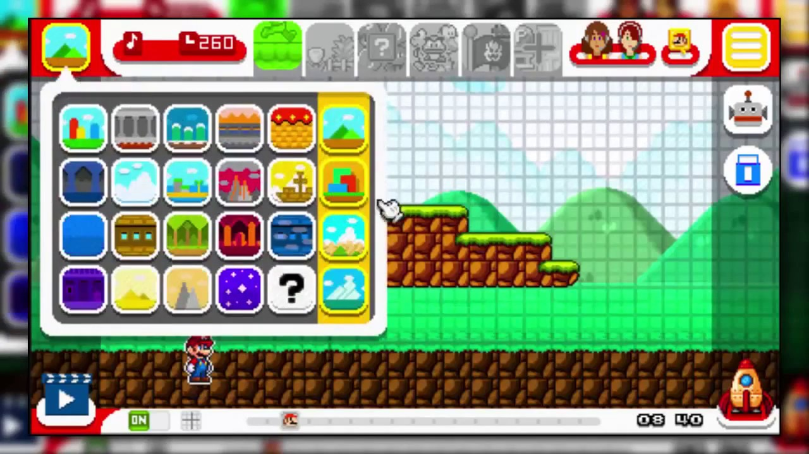

Jugabilidad: La dificultad tiene que adecuarse al público al que va dirigido el videojuego y encontrar un término medio. Por otro lado, el control y los movimientos deben ser fluidos y no deben suponer una odisea a la hora de hacerse con ellos. El jugador tiene que sentirse juez y parte de la historia, así que debe haber libertad de exploración para que sus acciones influyan en el desarrollo de la trama.
Argumentos: El jugador hoy en día no se conforma con liberar adrenalina y pasar un rato divertido, cada vez más buscan una trama envolvente, unos personajes carismáticos y una historia inmersiva. Por ello una primera fase para crear un buen videojuego es pasar ratos delante de una hoja en blanco y desarrollar un buen guión, escoger personajes acordes a la temática y desarrollar bien los niveles de nuestro tema.
Sonido: La banda sonora y los efectos sonoros también repercuten en la calidad de un juego. La música no sólo acompaña a las imágenes, sino que aporta significado y sentimientos a unos fotogramas que por sí solos estarían vacíos. También son importantes los sonidos de la naturaleza y de las armas, ya que influyen en que percibamos el ambiente cómo lo hacen los propios protagonistas.

Tipos de desarrolador
Programador:
Se encarga de implementar las mecánicas, la estética y la historia dentro de la experiencia interactiva del videojuego. Las actividades que realizan los programadores de videojuegos son muy diversas, ya que existen distintos tipos de programadores para los videojuegos en codigo.
Diseñador: Se dedica a hacer el prototipo del mismo, es decir, el diseño del juego en sí, así como aportan ideas para ayudar a determinar la apariencia y la forma final del juego. La función final es la de expresar diferentes ideas en el videojuego, desde diferentes puntos y mediante diferentes formas.